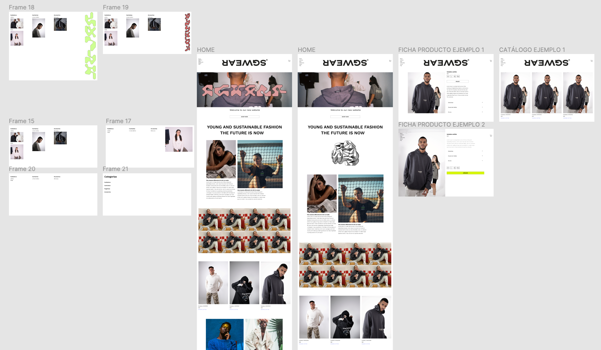

SGWEAR WEBSITE
SGWEAR is a project born in 2016 by Sandra González and Melanie Plaza. A project that was born from the desire to offer young people a different brand, with which they could feel identified. SGWEAR cares about the planet’s well-being and influences others to make sustainability-first buying decisions by offering a range of clothes made from recycled materials.
From the beginning, they have put a lot of effort into developing their brand image. They have collaborated with numerous influencers and participated in events such as the Animal Sound Music Festival and CREAMURCIA, where they were finalists.
With the aim of boosting their online sales and their presence on the internet, they decided to develop a website that would showcase their main values and offer a simple and comfortable shopping experience for customers.
At the end of 2020, the development of what would become the new website for the SGWEAR brand began.
- Roles: UI Design, Visual Design, Research, UX experience, Web development
- Tools: Figma, Wordpress, Elementor
- Year: 2020
- Context: Personal project
- Team: Miguel Plaza, Melanie Plaza, Sandra González
- Link to the project: SGWEAR website
problem
SGWEAR's previous website had a big number of problems ranging from a poor user experience to a lack of visual consistency. The website did not give customers enough confidence. The level of sales made through it was very low. Therefore, the main objective was, on the one hand, to address these issues and, on the other hand, to make SGWEAR's website reflect their brand identity and provide a modern and trustworthy look and feel for the user.
It was also important to ensure that the page could be easily modified by someone without a lot of knowledge, as well as being able to add or remove products without much difficulty.
design process
research + exploration
Together with the two founders of the brand, we started a process of research and prototyping that will last around 2 months and from which the first version of the website will emerge.
execution
Once the final structure of the page was defined, I proceed to start building the page in Wordpress with the help of the Elementor plugin. The page was built from scratch, i.e. without any kind of template. Despite using the Elementor plugin, it was necessary, in some cases, the use of html and CSS code to achieve the desired results.


results
After many iterations, we have achieved the objectives set at the beginning, i.e. that reflected the brand identity, that could be modified internally without much complexity and that offered a satisfactory user experience.
In terms of economic results, thanks to the website, the brand achieved record sales, increasing them by more than 400%.
The next steps, still to be taken, are to improve certain aspects of the website. For example, the menu in the desktop version or the payment process for the mobile version.
This was the first time I’ve ever built a website, and although it was a challenge, I’ve learned much about the design process, CSS and HTML, Wordpress, and how it could be a challenge to maintain and unify the whole website consistently, even if there is still room for improvement on this area.